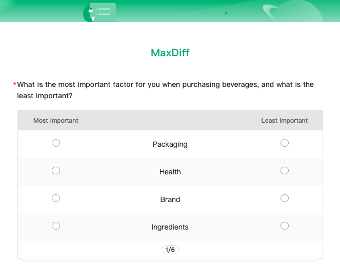
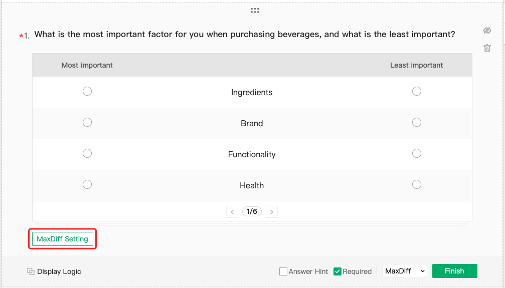
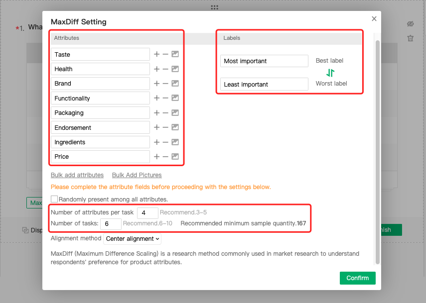
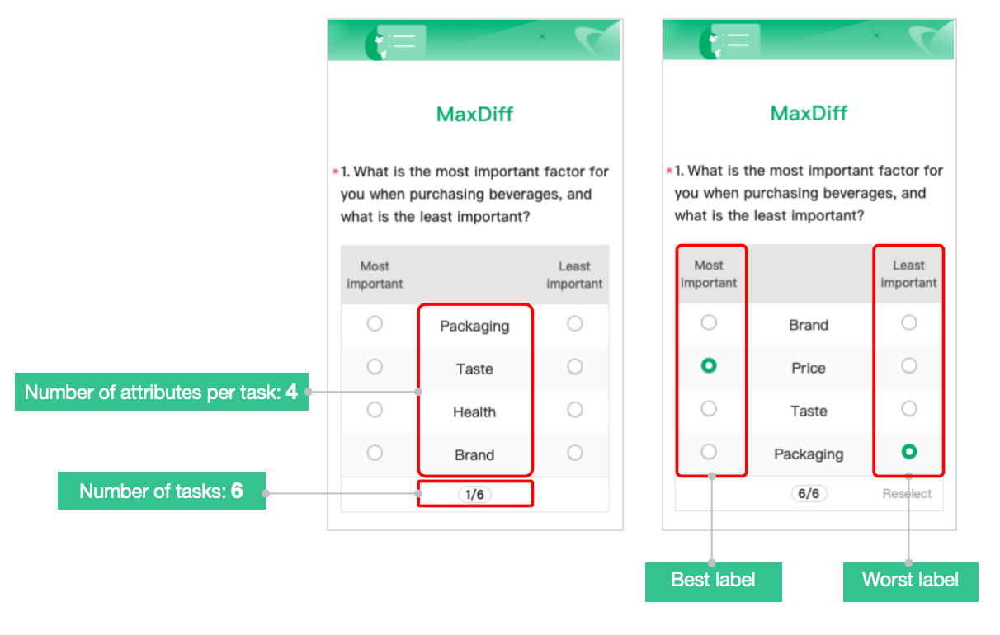
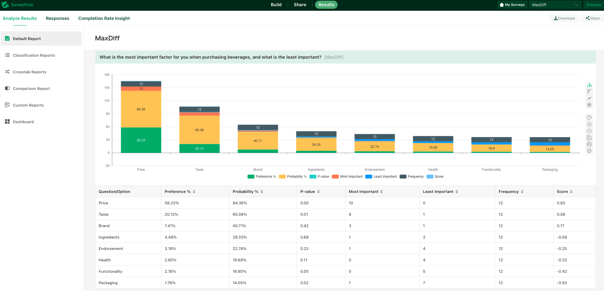

MaxDiff Analysis Question
MaxDiff (Maximum Difference Scaling) is a powerful survey technique that is widely used to measure consumer preferences and priorities. It presents participants with a series of choices and asks them to indicate their most preferred and least preferred options.

Creating a MaxDiff Question
1. Choose MaxDiff to add the question to your survey.

2. Enter the question.
3. Click on MaxDiff Setting to customize the following:


● Attributes: The features or options that need to be compared, such as different tastes or brands.
● Labels: The descriptions of the best and worst label. The default labels are “Most important” and “Least important”.
● Number of attributes per task: The number of attributes displayed per question. It is recommended to use 3-5 attributes for each task to obtain more accurate results.
● Number of tasks: This is calculated by the following formula: Number of times to display each attribute (default range: 3-5 times ) x Total attributes / Number of attributes per task. The recommended range for the number of tasks will be displayed based on the other information you've entered.

4. (Optional) Adjust any additional settings for questions.
5. Click Finish.
Analyzing the Data
The MaxDiff results are presented using charts and tables to visualize the data. The following statistical analysis is provided for each attribute:

● Preference %: The percentage of times an attribute was selected as the "best" option in a task. A higher preference percentage indicates a more preferred attribute.
● Probability %: The likelihood that an attribute will be selected as the "best" option in a task. Probability scores range from 0 to 1, with higher scores indicating a higher likelihood of being chosen as the best option.
● P-Value: A p-value less than 0.05 is typically considered to be statistically significant.
● Most Important / Least Important: The number of times an attribute was selected as the most important or least important.
● Frequency: The number of times an attribute was displayed.
● Score: (# of Selected Times for "Best" Label - # of Selected Times for "Worst" Label) / Frequency. A higher score indicates a more important attribute for the respondents.